Loan Officer Profile
Stamped onto borrower-facing PDFs. Stored locally on this Chrome profile only.
- These four fields are stored for use in borrower-facing PDFs generated by the extension.
- Pull from Salesforce fills Name / Email / Phone from your Salesforce profile and tries to auto-discover your NMLS field. You must be logged into Salesforce in this browser.
- Values are saved to
chrome.storage.localon this Chrome profile only — they don’t sync to other devices and never leave your browser. - If you leave a field blank, the corresponding line is omitted from the PDF footer rather than showing a placeholder.
VA Residual Income & Student Loan Calc
Runs on: operator.zillowhomeloans.com

- Run Residual Income Calc button shows up on VA loans (Regular military / National Guard / reserves). Reads income, debts, PITI, family size, and property state, then shows residual vs. the VA table requirement.
- Editable rows for Non-Taxable Income, Maintenance & Utilities, and Childcare — tweak and re-run.
- Calc Student Loans button on the Liabilities table fills monthly payments using FHA / DU / LPA / VA formulas.
- VA Entitlement Calc button (beside Run Residual Income Calc): enter the entitlement already used and it shows the max $0-down loan and the down payment required above it. County limit auto-fills from the property ZIP using the 2026 FHFA table (all high-cost counties, 1–4 unit), with a county dropdown + editable override and an FHFA lookup link.
2-1 Buydown Calculator
Runs on: operator.zillowhomeloans.com/loan-officer-portal — scenarios page

- Adds a Calc 2-1 Buydown button under every scenario card on the Pricing & Scenarios page (works for up to 10 cards).
- Reads the card's loan amount, note rate, term, and monthly P&I/PITI automatically.
- Pop-up shows the Year 1 (rate − 2%), Year 2 (rate − 1%), and Year 3+ P&I payments — plus total payment with escrow if PITI is on the card.
- Computes the exact buydown cost (sum of monthly P&I savings × 12 over years 1 and 2) and shows what it does to the total closing costs. Result is typically ~2.0–2.5% of the loan amount, varying by rate.
Sort & reorder scenario cards
Runs on: operator.zillowhomeloans.com/loan-officer-portal — scenarios page

- Adds a small toolbar above the scenario cards with Rate ↑ (low → high) and Rate ↓ (high → low) buttons.
- One click reorders the cards in place. Generate PDF then walks them in the new order.
- Drag-and-drop any card to fine-tune the order manually after sorting.
Genesys Caller ID for Salesforce
Runs on: *.lightning.force.com, *.mypurecloud.com + related

- Watches for phone numbers in the Genesys softphone widget and looks them up against Salesforce Lead, Contact, and Loan__c records.
- Displays the matched record's name as a blue badge next to the number — works on incoming calls, voicemail rows, and call history.
- Uses your existing Salesforce session cookie (no Connected App setup needed).
Auto-switch Lead pages to Call Details
Runs on: *.lightning.force.com — Lead pages

- When you open a Lead, automatically clicks the Call Details tab so you don’t have to navigate away from Active Listening every time.
- Runs once per Lead: if you click back to Active Listening (or any other tab), it leaves you alone.
- If you’re already on Call Details when a Lead loads, it does nothing.
Auto-switch Contact pages to Messaging
Runs on: *.lightning.force.com — Contact pages
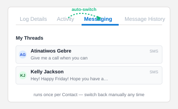
- When you open a Contact, automatically clicks the Messaging tab so you land on the SMS thread instead of Activity.
- Runs once per Contact: if you click back to Activity (or any other tab), it leaves you alone.
- If you’re already on Messaging when a Contact loads, it does nothing.
Gmail & Salesforce QoL
Runs on: mail.google.com, *.lightning.force.com

- Reply All button in every message header — no need to open the ⋮ menu.
- Delete key deletes the open thread / selected emails (no need to remember #).
- Inline compose moves to the top of the thread so the message you're replying to stays visible.
- Stops the sidebar "More" section from auto-expanding while dragging an email.
- Salesforce Lead pages: auto-disables the "Show Promotions" toggle.
Salesforce Contact SMS Quick Open
Runs on: *.lightning.force.com, *.salesforce.com

- Adds an Open SMS button next to phone numbers on Contact records.
- Clicking it opens the Messaging utility, finds an existing thread, or starts a new one with that number pre-filled.
- Skips Highlights panel, datatables, TCPA / DNC sections, and non-Contact records to avoid clutter.
SMS Quick-Add Participants
Runs on: *.lightning.force.com — Lead pages with the Messaging utility open

- Adds Add Buyer’s Agent and Add Co-Borrower buttons inside the New SMS Conversation panel.
- One click fills the participant search input with the right phone and presses + so you don’t have to type the number or hover the contact card.
- Buyer’s Agent phone is read straight from the Buyer’s Agent Phone field on the Lead page.
- Co-Borrower phone is fetched from Salesforce by Contact id (uses the same session cookie as Caller ID — no Connected App needed).
SMS Mark All As Read
Runs on: *.lightning.force.com — the Salesforce Messaging utility panel
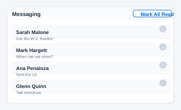
- Adds a Mark All As Read button in the Messaging panel header next to New thread.
- One click walks every unread thread, opens it (which is how Salesforce registers a read receipt), then clicks Back to return to the inbox.
- Detects unread threads via the bold subject text, the right-side unread count pill (
.unread-count/.unread-countZuid), or any.unreadclass. - Verbose console logging at every step — if anything misbehaves, F12 → Console will say exactly what it found / clicked / waited on.
ZHL Loan Amount Field
Runs on: operator.zillowhomeloans.com/loan-officer-portal

- Adds an editable Loan amount field below the purchase price / down payment row in Pricing & Scenarios.
- Edit loan amount and the down payment / down payment % update automatically (loan = purchase − down).
- Edit purchase or down payment and the loan amount recalculates live.
Drag Gmail attachments as files
Runs on: mail.google.com
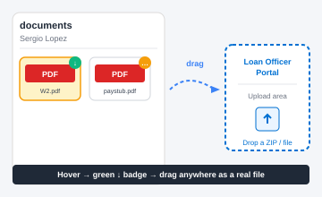
- Lets you drag Gmail attachments to any external drop zone (Loan Officer Portal upload area, Slack, file inputs on other websites, etc.) as a real file — like Outlook used to.
- When you hover over an attachment chip in Gmail, the extension pre-fetches it in the background. A small green ↓ badge appears in the corner when it’s ready to drag.
- Drop the attachment into a Gmail compose window body and it now attaches the file instead of inlining it as an HTML image — handy for forwarding attachments without losing them.
- If you drag before the prefetch finishes, the badge is yellow / red — give it a second and try again, or grab it after the badge turns green.
FHA Collections & Disputed badges
Runs on: operator.zillowhomeloans.com/loan-officer-portal

- Adds two pill badges in the Liabilities section header that sum cumulative balances against the FHA caps:
- Total Collections — green ✓ under $2,000, red ✕ at $2,000+. Counts only collection accounts (account type = Unknown or Collection). Charge-offs, repossessions, and late-pay rows are excluded per the FHA rule.
- Total Disputed — green ✓ under $1,000, red ✕ at $1,000+. Counts disputed derogatory accounts (collections, charge-offs, or 30+ day late within last 24 months). Zero-balance disputed accounts and disputed medical accounts are excluded.
- Medical collections are excluded from both totals via a payee keyword filter (hospital, clinic, AR Resources, Optum, etc.). Hover the badge for a tooltip listing every row counted vs. excluded.
- Reads live from LOP’s React state — updates the instant a liability is added, edited, or excluded. No row expansion, no UI flicker.
- Each borrower-pair tab on multi-borrower loans gets its own badge pair with its own scoped totals.
Gmail Caller ID for Switchboard emails
Runs on: mail.google.com

- When Switchboard sends a “Do Not Reply: Incoming Text Message from <phone>” email and the phone number is in a Salesforce contact’s Phone or Work Phone field (not Mobile), Switchboard’s subject has no name — just the digits. This module fills the gap.
- Looks the number up in Salesforce via the same Caller ID plumbing the Genesys / Salesforce widget uses (searches Phone and MobilePhone across Lead / Contact / Loan), then appends a blue Caller ID pill with the contact’s name next to the subject.
- Only triggers on phone-only subjects. Emails where Switchboard already put a name in the subject (because the number was in Mobile) are left alone — no duplicate badging.
- Requires you to be signed into Salesforce in the same browser, same as the existing Caller ID module.
FHA + Non-Permanent Resident Alien warning
Runs on: operator.zillowhomeloans.com/loan-officer-portal

- Watches the Product name and every borrower’s Citizenship field. If the loan is FHA and any borrower is marked Non-Permanent Resident Alien, a sticky red banner appears across the top of the page and the offending citizenship dropdown is outlined in red.
- HUD removed NPRA borrowers from FHA eligibility on May 25, 2025. The warning is intentionally hard to miss so this combination doesn’t slip into application.
- Banner auto-clears the moment the product is changed off FHA or the citizenship is changed to US citizen / Permanent resident alien.
VA + non-spouse co-borrower warning
Runs on: operator.zillowhomeloans.com/loan-officer-portal
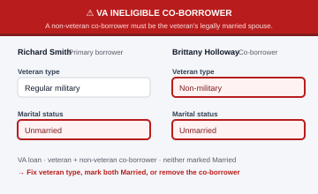
- Watches the Product name, every borrower’s Veteran type, and every borrower’s Marital status. If the loan is VA, one borrower is a qualifying veteran (Regular military / National Guard or reserves), another is non-veteran, and any borrower is not marked Married, a sticky red banner appears across the top and the offending fields are outlined in red.
- ZHL only allows a non-veteran co-borrower on a VA loan when they’re the veteran’s legally married spouse, or when they independently qualify for VA. Two unmarried unrelated parties (one veteran, one not) is an underwriting error — this warning catches it before it slips into application.
- Banner auto-clears the moment the product is changed off VA, the co-borrower’s veteran type is set to a qualifying value, or all borrowers are marked Married.
Copy LOP file (stage & paste)
Runs on: operator.zillowhomeloans.com/loan-officer-portal
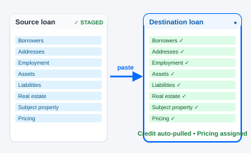
- Adds a floating Copy LOP file: Stage / Paste bar to the Full Application page. On the source loan, click Stage from this file — the extension snapshots every editable Personal info / Contact / Marital / Military / Declarations / Demographics field and stores it under chrome.storage keyed by the source loan ID. On the new loan, click Paste from staged and pick which stored loan to fill from.
- Handles co-borrowers on the same pair: fields in
personal-info-section-0(Primary) andpersonal-info-section-1(Co-borrower) are tracked separately so primary→primary and co-borrower→co-borrower stay aligned. If the destination doesn’t have a co-borrower yet, add them first (+ tab → Coborrower with [primary]) then re-paste. - Tables (Addresses, Employment, Other income, Assets, Gifts, Liabilities, Real estate) are NOT auto-pasted in this version — each row needs to be added through LOP’s own Add button flow. The summary panel lists the table row counts from the source so you know what’s left to enter manually.
- Multiple stages persist (up to 10). Source field values that are readonly on the destination are skipped and reported in the summary so you can see exactly what was written vs. what needs manual entry.
ZHL Loan Comparison PDF
Runs on: operator.zillowhomeloans.com/loan-officer-portal
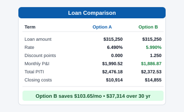
- Adds a ZHL Comparison PDF button next to LOP’s existing Generate PDF on the Scenarios review page. Click to generate a borrower-facing comparison PDF for every selected scenario.
- Mirrors LOP’s standard comparison output with the following changes: Seller credit is shown as its own line, the Credit score and DTI rows are removed (the borrower doesn’t need their qualifying credit pulled into a handout), and Estimated monthly cost (PITI) and Cash (to)/from are rendered noticeably bigger / bolder so the borrower’s eye lands on the two numbers that matter.
- Adds a Page 2 cost summary per scenario with the monthly cost broken into Principal & interest vs Taxes/insurance/escrows, plus a closing-cost summary showing total closing costs, seller credit applied, net closing cost, down payment, and the final Cash (to)/from at closing.
- Uses the browser’s native “Save as PDF” print flow — pick Save as PDF in the print dialog to save, or send straight to your printer.
- A 2% Grant PDF button sits beside it: the same comparison doc plus a ZHL Grant = 2% of the loan amount credited toward the down payment and a Cash to close after ZHL Grant total. Only enabled when every selected scenario is Conf Home Ready 30 Yr Fixed with a loan amount ≤ $350,000 and the property state is CA, DC, GA, PA, or TX — otherwise it’s disabled with a hover explaining why.
Print Buyer Worksheet
Runs on: operator.zillowhomeloans.com/loan-officer-portal
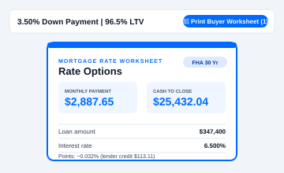
- On the eligibility / pricing-results table, adds a Print Buyer Worksheet button into each LTV section header (next to Base Loan Amount). Check one or more rows in the section, then click the button to open a borrower-facing handout in a new tab.
- Three scenarios per page, Zillow-blue branded. Each shows the big two numbers buyers care about — Estimated monthly payment and Estimated cash to close — then a clean details row with rate, points (plain-English credit vs. cost), closing costs, and breakeven. DTI is intentionally omitted (the borrower doesn’t need their qualifying ratio on a handout).
- Auto-fires the print dialog — pick Save as PDF to save, or send straight to your printer.
Max purchase price estimator
Runs on: operator.zillowhomeloans.com/loan-officer-portal
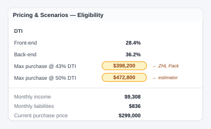
- On the Pricing & Scenarios page, adds a pill in the Eligibility Details row showing the estimated max purchase price that would push back-end DTI to its program cap: Conv 49.99%, FHA 56.99%, VA 60%.
- If a scenario priced multiple loan types, shows one pill per type side-by-side.
- Reads the current scenario’s PITI and back-end DTI, plus monthly income and liabilities from the top of the page, then back-solves the price assuming taxes / HOI / MI scale linearly with PP (accurate to within 1–2%).
- Hover the pill for the math behind it.
FHA 90-Day Flip Rule checker
Runs on: operator.zillowhomeloans.com/loan-officer-portal
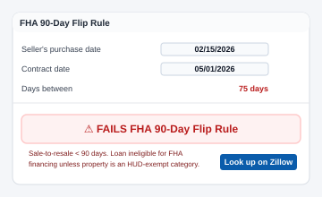
- Adds a small card under Loan Details on the right rail (FHA loans only) with inputs for the property address, the seller’s purchase date, and the contract date.
- One click on 🔎 Look up on Zillow opens a new tab searched for the property so you can grab the seller’s acquisition date from the price history.
- Computes the days between dates and shows a color-coded result: > 180 days clear, 91–180 days may require a second appraisal, ≤ 90 days NOT eligible for FHA.
- Your inputs persist while you’re on the loan, so navigating around the application keeps the entered dates.
FHA Manual Underwrite eligibility
Runs on: operator.zillowhomeloans.com/loan-officer-portal
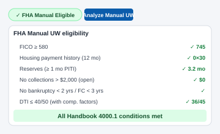
- Reads each borrower’s three bureau scores from the Credit section, takes the middle, then uses the LOWER middle score across borrowers as the qualifying score.
- Pins a green ✓ FHA Manual Eligible pill under the Credit heading when the qualifying score is ≥ 640 (ZHL’s manual-UW floor), or a red × FHA Manual Ineligible pill when below 640.
- Hovering the pill reveals the full FHA Manual UW guideline matrix — min-score overlays (PHH ≥ 680, Mr. Cooper not allowed), max DTI 50%, reserve requirements, the four ratio tiers (31/43, 37/47, 40/40, 40/50), and the compensating-factor options for each.
- If credit hasn’t been pulled yet, the pill shows a neutral “eligibility unknown” state and still surfaces the guideline matrix on hover.
- VA loans: the pill and analyzer automatically switch to VA Manual Eligible / Ineligible at ZHL’s 660 floor. The VA analysis checks min score 660, max DTI 43%, and residual income via the VA table (120% of the requirement when DTI > 41%), plus manual confirmations for VA Handbook Ch. 4 and VA guaranty eligibility — no FHA ratio tiers or investor score overlays.
Copy addresses primary → co-borrower
Runs on: operator.zillowhomeloans.com/loan-officer-portal
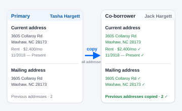
- On the Full application → Addresses section, every empty co-borrower gets a Copy addresses from primary button next to its Add address link.
- One click re-adds every address on the primary borrower’s list for the co-borrower — leans on LOP’s built-in Use existing address dropdown so Street / City / State / Zip / Country come in cleanly, then fills the four fields LOP leaves blank: Address type, Mailing same as current checkbox, Housing type, and the Move in / Move out dates.
- Button only appears when the destination has zero addresses — it never appends to a co-borrower who already has rows, so you can’t accidentally duplicate.
- Works for files with 3+ borrowers: the button appears next to every empty co-borrower and copies from the primary borrower’s list.
Bulk-delete unsent tasks
Runs on: operator.zillowhomeloans.com/loan-officer-portal
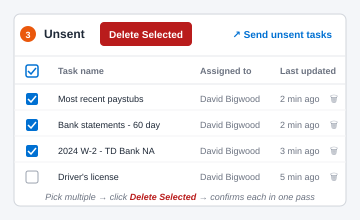
- Adds a checkbox column to the Unsent tasks table in the LOP Tasks tab so you can pick multiple tasks at once.
- A red Delete Selected button next to the “Unsent” heading deletes every checked task in one pass — LOP’s per-task confirm dialog is dismissed automatically for each.
- Header checkbox toggles all rows. Auto-hides itself and the button when the section is empty so the page looks like stock LOP.
- Only touches the Unsent section — sent / completed tasks are untouched.
Bulk-download completed-task documents
Runs on: operator.zillowhomeloans.com/loan-officer-portal + zillowdocs.com
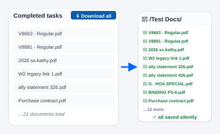
- Adds a ⬇ Download all docs button next to the Completed heading on LOP's Tasks tab. Walks every Zillow Docs link in the Completed table, opens each one in a background tab, auto-clicks the viewer's Download button, then closes the tab.
- Sequential — one document at a time — so Chrome's "this site wants to download multiple files" prompt only fires once and you can watch live progress in a small modal that shows the current document name and a progress bar.
- Files land in your browser's default Downloads folder with whatever filename Zillow Docs assigns them. The "Done" modal lists every downloaded file with its task name so you can rename / move them after.
- The background-tab content script is armed-flag gated: opening a Zillow Docs document manually doesn't trigger the auto-click. Only this feature's bulk flow can arm it.
Net Proceeds from Sale Calculator
Runs on: operator.zillowhomeloans.com/loan-officer-portal — Financial Information page
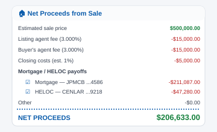
- Adds a 🏠 Net proceeds calc button next to the Add asset or credit button in the Assets section.
- Opens a modal with line items: Sale price, Listing agent fee (default 3%), Buyer's agent fee (default 3%), Closing costs (auto-fills at 1% of sale price), Mortgage/Loans/HELOC payoffs, and Other. Live-computes net proceeds as you type.
- Copy summary button copies a plain-text breakdown to clipboard so you can paste it into notes or Slack.
- Last values persist via
localStorageon this tab.
Pricing Exception Workflow
Runs on: operator.zillowhomeloans.com/loan-officer-portal — loan toolbar
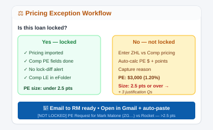
- Adds a ⚖ Pricing Exception Workflow button to the loan toolbar (near Copy LOP file / Stage / Paste from staged). Click to walk through your manager’s PE submission checklist.
- Branched flow: first asks whether the loan is locked, then walks the appropriate prerequisite checks (locked: import pricing → Comp PE fields → no lock-diff alert → Comp LE in eFolder; unlocked: scenario assigned → Comp LE on tasks → enter ZHL + comp pricing).
- Auto-computes PE $ and points on the unlocked path: PE $ = (ZHL Box A − ZHL credits) − (Comp Box A − Comp credits); PE points = PE $ / loan amount × 100.
- > 2.5 pts branch surfaces the three justification questions your manager requires (reason for PE, expectations set with borrower, relationship with agent/partner) and includes them in the generated email.
- Email output: editable subject + body, with Open in Gmail (uses Gmail’s compose URL so it opens directly in Gmail, not your OS default mail client) and Copy body / Copy subject buttons. Attachments still have to be added manually after the email opens.
- RM email auto-saves the moment you type it and tab out (or click any of the email actions). Once saved, it pre-fills on every future PE workflow until you change it.
- Auto-fills Purchase price / Loan amount / Interest rate / Loan type / FRM/ARM from LOP's Loan Details right-rail card. ZHL Box A and Lender credits are auto-filled by silently opening the Total closing costs popup and scraping the Lender costs Total + Lender credit. New Competitor lender name field flows through to the email subject and the comparison table header.
Add Co-Borrower to Salesforce
Runs on: operator.zillowhomeloans.com/loan-officer-portal + Salesforce
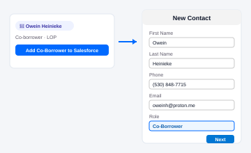
- Adds an Add Co-Borrower to Salesforce button next to the co-borrower’s Resend Link on the Full Application page. Reads the co-borrower’s first name, last name, cell phone, and email.
- Switches to your open Salesforce tab, confirms the lead matches the primary borrower (by name), clicks New Contact, and fills First name / Last name / Phone / Email. Sets Role = Co-Borrower; Company auto-fills from the name.
- Stops before saving — the New Contact modal is left filled and on screen so you review it and click Next / Save yourself. Nothing is written to Salesforce automatically.
- If no Salesforce tab is open, or the open lead doesn’t match the borrower, you get an inline message and nothing is changed.
Anonymous usage telemetry
Runs in: background — no page-level UI
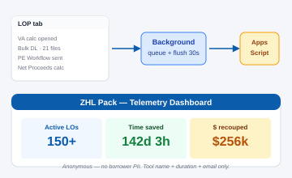
- Sends a small event ping to the extension admin (Justin) when you use a tool — which feature, which version, when. Helps decide which modules to invest in.
- Identifies you by your work Gmail address (read once from the Google account button when you have Gmail open) so the admin can see who's using what without anything else to set up.
- No email contents, no SMS contents, no Salesforce record contents — just feature names and counts.
- Always on. This is how the admin decides which modules to keep building and improving — since it carries no borrower PII (tool name + duration + work email only), it can't be turned off.